시민에너지·햇빛소득마을
김해 초전 햇빛소득마을 997.1kW, 전국 첫 상업운전
주민 협동조합이 남해고속도로 비탈면 6,024㎡에 지었다. 정책금융 융자 85%·자부담 15%로 짓고 전기는 20년 계약으로 판다.
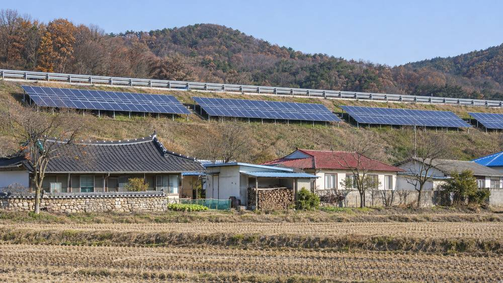
광주 에너지전환마을 6년, 시민발전소 3,975㎾
광주기후에너지진흥원이 11월 24일 성과를 내놨다. 23개 마을이 참여했고 올해 교육·캠페인 참여 시민은 11만5,000여 명으로 지난해의 2.1배다.

평창 유포리 태양광 150㎿, 군민 소득사업 세 번째 협약
평창군이 11월 26일 정상그룹과 봉평면 유포리 태양광단지 협약을 맺는다. 운두령풍력과 함께 2029년 상업운전이 목표다.

미국 그랜드헤이븐 공영 태양광, 착공까지 56좌 남아
1좌 570달러를 내면 패널 1장 몫 전기를 20년 동안 요금에서 공제받는다. 333좌가 차야 착공하며 신청 마감은 12월 15일이다.
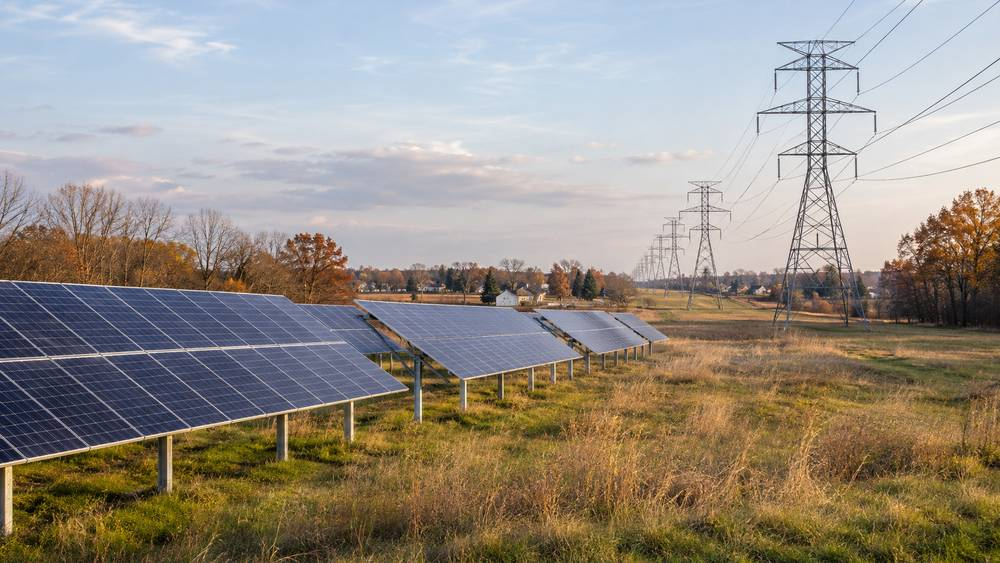
영국 공동체에너지 투자 19% 줄어…359MW 멈춰
잉글랜드·스코틀랜드·웨일스 공동체에너지 단체가 낸 2026년 현황 보고서다. 660개 단체 조합원 8만9,023명이 발전 설비 452MW를 운영한다.

보령 발전노동자 협동조합, 충남 예비사회적기업 됐다
석탄화력 폐쇄에 맞서 발전 비정규직 노동자들이 8월 세운 재생에너지 협동조합이다. 충남도가 17개사를 지정했고, 3년 동안 기금 신청과 우선 구매 지원을 받는다.

햇빛소득마을 528곳, 3차 공모 결과는 12월 말 발표
김성환 기후에너지환경부 장관이 11월 23일 서울에서 주민 대표 등 60여 명을 대상으로 연 간담회다. 부지·계통·자금 조건부 마을이 사례 발표를 맡았다.

네덜란드 협동조합 4곳, 100% 지역 소유 풍력 추진
오버레이설주가 11월 20일 겐네-하르스트 풍력단지 개발 협약에 서명했다. 풍력기 5기 배치안을 두고 25일 즈볼레에서 주민 설명회가 열린다.
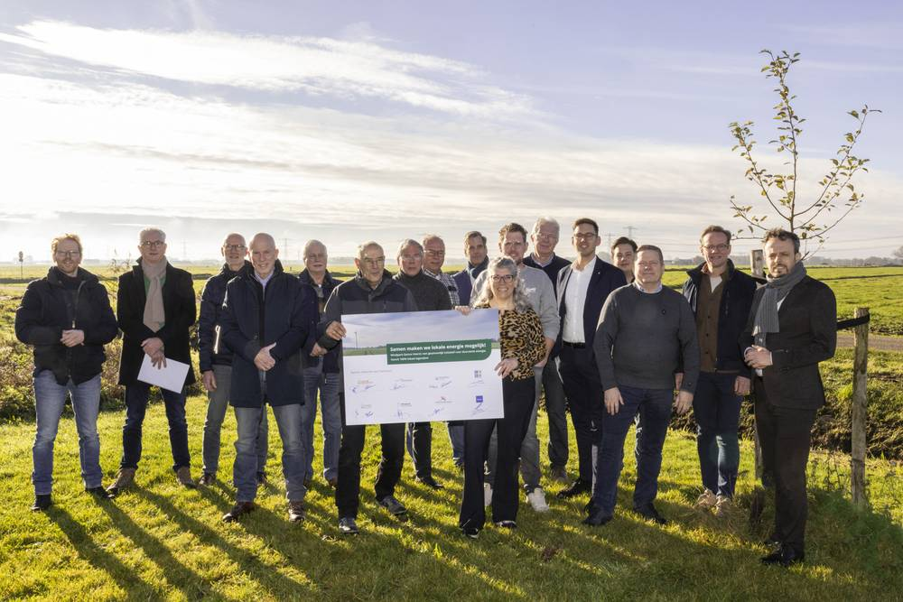
함평 햇빛소득마을·영농형 태양광, 12월 권역 강연 8회
함평군이 12월 1~8일 4개 권역을 돌며 회당 3시간 강의와 상담을 연다. 사업 신청과 관계없이 11월 30일까지 온라인 선착순으로 받는다.

워싱턴주 원주민 부족 태양광 17건에 2,074만 달러
미국 워싱턴주가 탄소 배출권 거래 수입으로 부족 주택·학교·소방서의 태양광과 배터리를 돕는다. 2025년 예산이 모자라 떨어진 16건을 모두 채웠다.

독일 협동조합 시민 배터리, 184kWh 출자 다 채웠다
다름슈타트 에너지협동조합이 비켄바흐 산업단지의 남는 접속 용량에 붙인 배터리 자금을 11월 20일 시민 출자로 마련했다. 지분 1좌는 100유로다.
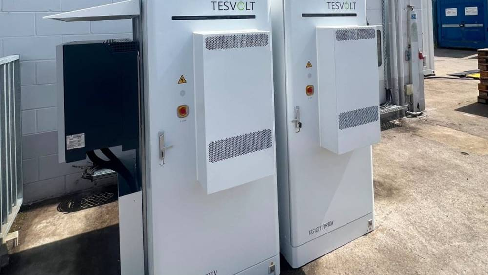
군산시민발전 비상무이사 4명 공모, 24일 마감
군산시 100% 출자 발전회사가 금융·법률·에너지·경영 분야 무보수 이사를 뽑는다. 새만금 육상 100MW를 운영하고 수상 법인 지분 5.5%를 약정했다.

셰틀랜드 변전소 주민기금 53만 파운드, 주민이 정한다
영국 송전회사가 모시힐 풍력 연결 변전소 주변 마을 기금을 2027년 여름 연다. 12월부터 주민 의견을 들어 지원 지역과 쓰는 곳을 정한다.
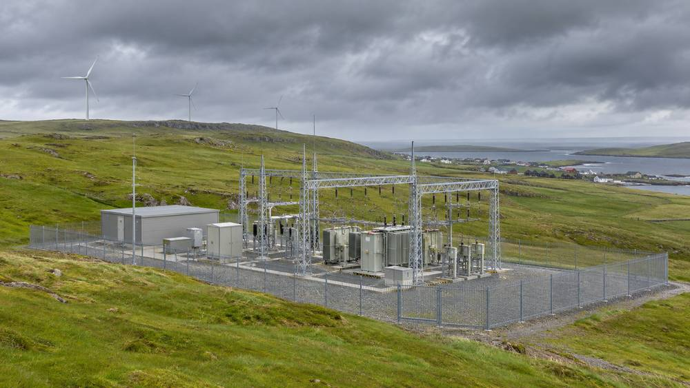
독일 키르히아르트 고속도로변 30MW 시민 태양광
조합원이 1,300명 넘는 크라이히가우 시민에너지협동조합이 2028년 건설을 목표로 100유로 출자·900유로 대출 묶음을 내놨다.

옥스퍼드셔 주민 태양광·배터리, 50만 파운드 출자 모집
로우 카본 허브가 7.4MW 태양광과 10MWh 배터리 건설비를 2027년 2월 5일까지 모은다. 20일 현재 89명이 12만1,545파운드를 냈다.

스코틀랜드 공공부지 21곳, 주민 재생에너지에 연다
병원·법원 주차장·산업단지 땅이 후보에 올랐다. 이튿날 정부는 교회·섬마을 등 주민 사업 25곳에 99만1,492파운드를 준다고 발표했다.

강화군 이장 130여 명, 햇빛소득마을 실무 교육 받아
인천 강화군이 11월 16일 군청 진달래홀에서 부지 선정·인허가·주민 수용성을 가르쳤다. 인천은 행안부 2차 공모에서 2개 마을이 신청해 1곳이 뽑혔다.
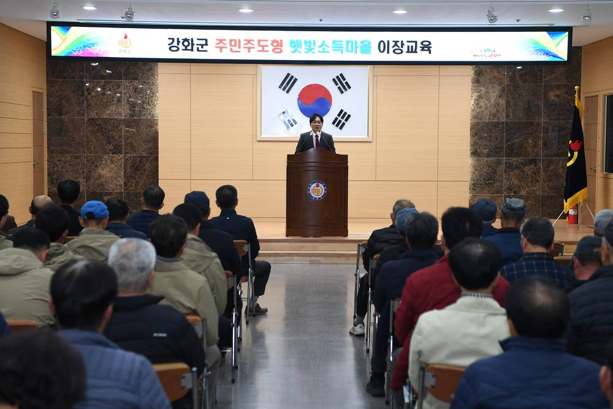
수원햇빛발전 시민펀드, 배당 목표 연 5~8%
수원 공공주차장 20MW 태양광 회사 설명회가 11월 16일 시의회에서 열렸다. 수원도시공사가 45%를 내고 조합·지역기업이 20~30%씩 출자하는 안이다.

포천 RE100 소득마을 10곳, 160가구에 태양광
포천시가 18일 마을 10곳·설비업체 2곳과 협약을 맺었다. 9억7,100만 원으로 주택 480kW와 마을 공동발전소 152kW를 2027년 말까지 짓는다.
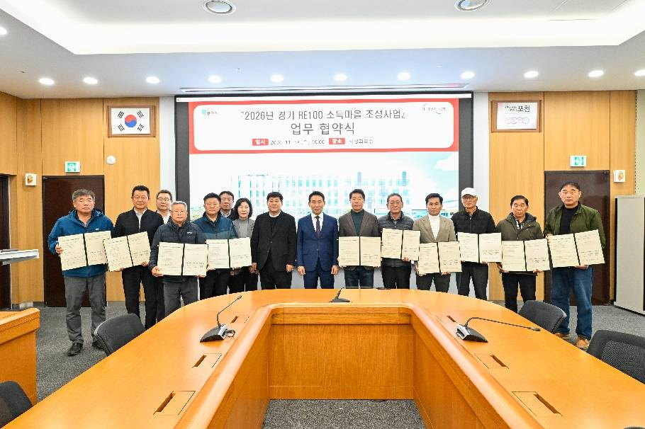
영국 웨일스 미래세대위원, 지방정부 10곳의 재생에너지 역할 법정 조사 시작…공유지·지역사회 소유·혜택 기금 따진다
22개 지방정부·4개 광역합동위원회 웰빙 목표 중 에너지 언급은 3개뿐 / 2027년 지방선거 뒤 권고 공개

협동조합기본법 개정안, 조합원 총회 소집·안건 제안권
안도걸 의원 등 11명 발의로 조합원 5분의 1이 총회 소집을, 10분의 1이 안건을 요구할 수 있고 원격영상 총회와 우선출자 한도 50% 확대가 담겼다.
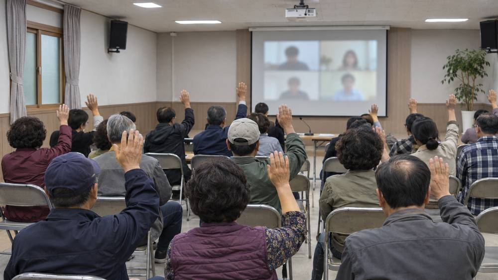
나주 햇빛소득마을, 12개 마을 사전 컨설팅
나주시와 한국에너지공단이 11월 16일부터 27일까지 7개 면 12개 마을을 돌며 2027년 공모 준비를 돕고, 12월에 예비마을을 고른다.
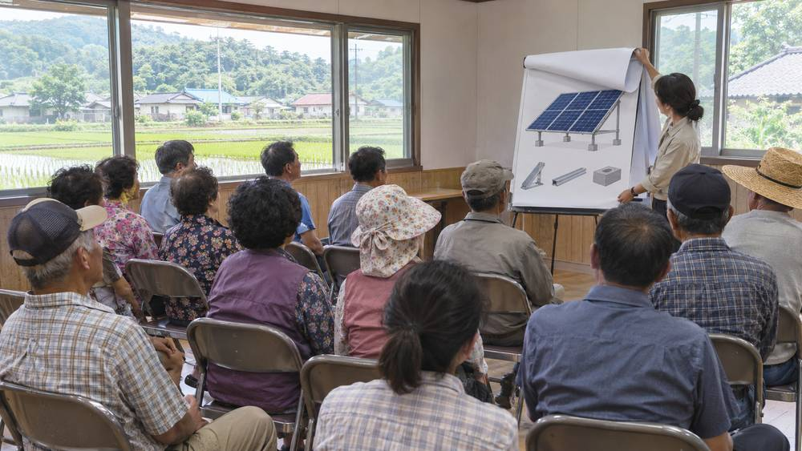
에든버러 시민 태양광 조합, 113만 파운드 출자 모집
11월 19일 현재 31만1,480파운드가 모였고 마감은 12월 15일이다. 학교 5곳 등 공공건물 지붕 10곳에 1.23MW를 놓고, 최소 출자는 25파운드다.
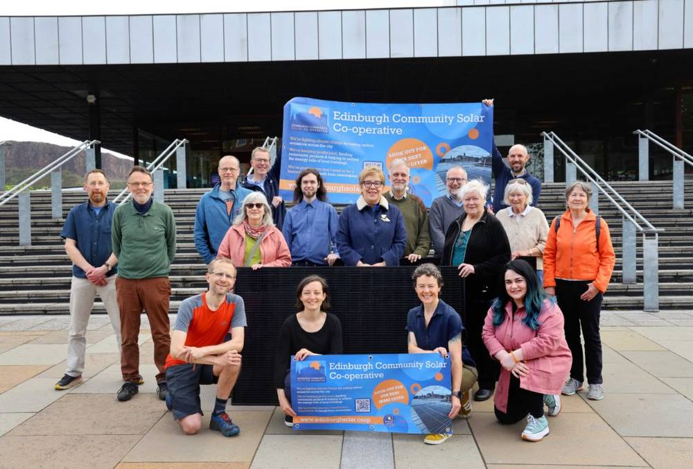
미국 델라웨어 전력협동조합, 11월 조합원 7만5,000여 명에 출자배당 1,000만 달러 돌려줘
2014·2015년 조합원이 대상, 지금 조합원은 요금 차감·떠난 조합원은 수표 / 1936년 농민들이 세운 조합, 20년간 1억 달러 넘게 환원

전력망 막힌 햇빛소득마을 133곳에 저장장치, 국비 981억 원 커뮤니티솔라 공모 시작
에너지공단, 55개 배전선로에 ESS 지원…국비 40%·지방비 30%·민간 30% / 5개 권역마다 통합발전소 사업자 1곳, 12월 11일 마감

[부산형 햇빛소득②] 기업 PPA로는 수익률 2%대…"부산시가 전기 사서 배출권 비용 아끼자"
부산연구원 "고정가격 상한 150원 아래, 주차장 태양광은 145원에 팔면 원금도 못 건져" / 부산시 배출권 구매비 7억 원대서 20억 원 넘게…시가 PPA 구매자 되면 IRR 5% 넘어 / 전력거래소 "직접 PPA 300kW 이상 고압 요건 완화 검토" / 자유토론서 "협동조합에 맡겨 달라"…선로 1.4km·부서 칸막이 지적
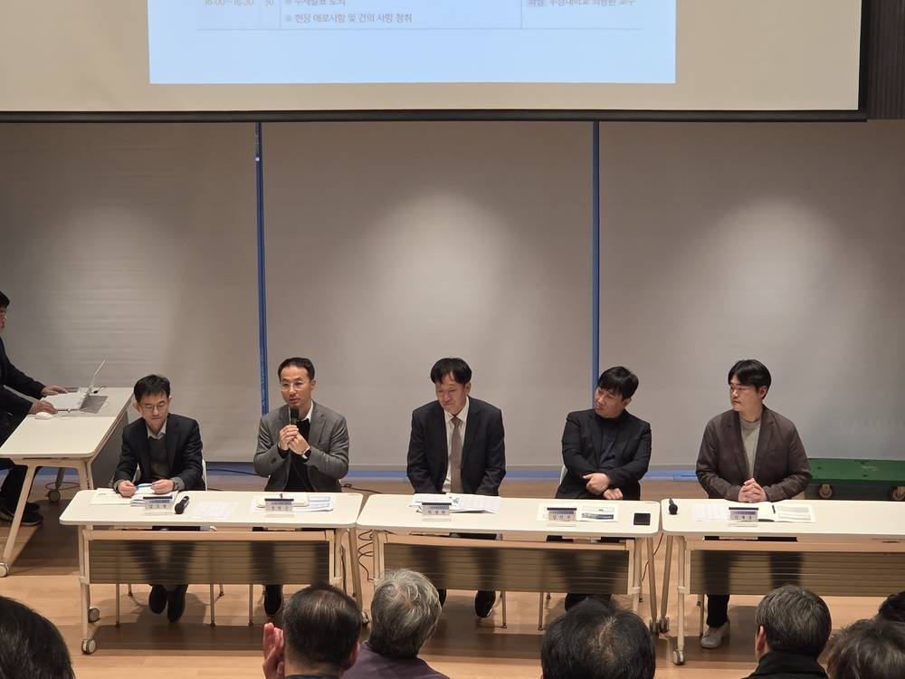
[부산형 햇빛소득①] 공공부지 10MW에 시민 45억…2027년 1월 시범 공모
부산시 17일 옛 시장 관사 도모헌서 에너지신산업 협업네트워크 포럼 / 2030년까지 2.5MW씩 4단계로 10MW, 사업비 150억 원 중 시민 30%·PF 70% / 부산테크노파크 "정부 햇빛소득마을 80% 조건부 선정…부지·판로·자금·신뢰 원스톱 지원"

철원·화천 군의원, 접경지역 정책포럼서 영농형 태양광 군민펀드 제안
철원 농지 약 60% 외지인 소유 우려…화천은 군 유휴 추정부지 약 1,087만㎡ 활용 특례 확대 제안

경기 공공 RE100 설비 가동 중지 1,914일…소득마을 148곳 중 87곳은 3개 시군에
도의회 행정사무감사에서 지영일 의원이 발전량 중심 관리 요구, 경기 RE100 마을 올해 목표는 200개
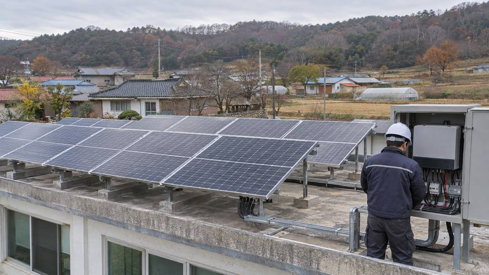
이탈리아 사보나시, 지역 재생에너지 공동체 참여 절차 시작…시의회 표결 남아
시 집행위원회가 첫 단계 승인, 전기를 만들고 쓰는 회원으로 재단에 가입…공동체 이익은 에너지 빈곤 가구 지원에 무게

미네소타 전력협동조합 크로우윙파워, 11월 조합원에게 300만 달러 가까이 환급
2010년분 111만1,000달러에 그레이트리버에너지가 배정한 1992~1998년분 182만7,000달러, 현재 조합원은 전기요금에서 차감

래퍼해녹 부족, 옛 수도 터 교육시설 지붕에 12.32 kW 태양광…시공은 원주민 기업이 부족 비용 없이
패널 28장으로 2 MWh 가까이 발전…역량강화 보조금으로 신청부터 설치까지


영국 북동부·요크셔 넷제로 허브, 주민 소유 지역에너지를 핵심 사업으로 꼽았다
정부 예산으로 움직이는 잉글랜드 5개 허브가 지역사회 에너지 사업의 상담과 기금 집행을 맡는다

스페인 산타폴라시, 학교·체육관 지붕 200kW 전기를 주민·상점 200곳과 나눈다
발전 지점 5,000m 안이면 참여 가능…가입 무료, 집에 설비 달거나 선불금 낼 필요 없어
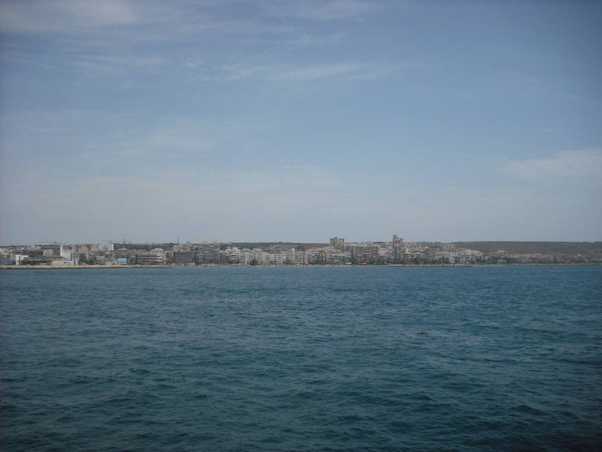
독일 에너지협동조합 프로콘, 아미바 운영 통신사로부터 6만3,300유로 출자 받아
지분 1,266좌를 사들인 통신사는 배당도 다시 지분에 넣기로 했고, 조합원은 4만2,000명을 넘는다

독일 생태경제연구소, 에너지협동조합 여성 참여 걸림돌 짚은 정책제안서 발간
쉬운 말·다양한 이미지·분명한 참여 방식 권고, 밤베르크 조합은 활동 쉼 허용·하이브리드 회의, 브레멘 조합은 감사회 체험 프로그램 운영

수원 두 에너지협동조합, 11월 25일 율전동에 정원 만든다…도시숲 후원금 1,300만 원
11월 12~25일 조합원 주간 운영, 수원햇빛발전(주) 창립 설명회는 11월 16일 수원특례시의회에서 열기로 공지

이탈리아 발사모자 재생에너지 공동체, 주민 25가구 태양광·히트펌프 공동구매 추진
시민·소상공인 102명 협동조합, 태양광 200kW 넘게 설치, 자원봉사자 방문 홍보에 행사 4회 75명 참석

셰틀랜드 의회, 송전 막혀 버려지는 풍력 전기를 주민 요금에 쓰는 방안 조사 착수
가구 40%가 에너지빈곤인데 터빈 103기 풍력단지는 송전이 막히면 전기를 내보내지 못해…SSE·오프젬·GB에너지 참여, 빨라야 2028년 시범 운영 목표

화순 수동마을 1메가와트 햇빛소득마을, 저장장치로 전력망 잇는다…설치·운영비는 민간 사업자가 부담
49가구 주민 100% 동의…기후에너지환경부 김성환 장관 11월 11일 현장 점검, 저장장치 사업자 공모는 그 주 안에 낸다

유럽연합, 에너지공동체 10곳에 거버넌스 혁신상 상금 100만 유로
스페인 만사 에네르히아 35만 유로, 오스트리아 로빈 파워후드 20만 유로, 포르투갈 비베르 텔헤이라스 10만 유로

크랄링어폴더르 열 협동조합, 델플란트 지열 사업과 열 공급 계약 서명
열 출력 25 MWth 규모, 첫 시추는 2028년 중반·첫 열 공급은 2029년 4분기 목표

독일 협동조합 등 연합, 이웃 간 전기 나눔 개선안 11가지 제시…기한 넘긴 배전망 회사에 정액 보상 제안
에너지경제법 제42c조로 2026년 6월부터 허용됐지만 처리 절차·계량기·비용 문제가 남아, 연합은 단기 6개·중기 3개·장기 2개 과제로 나눠 제안

용인시정연구원, 반도체 도시의 재생에너지 수익을 시민과 나누는 5가지 방안 제시
공영주차장 51곳 중 17곳이 태양광 설치계획 제출…시민 출자 배당·주민 일자리·정책금융 연계 담아